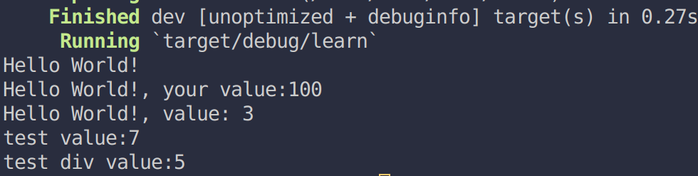
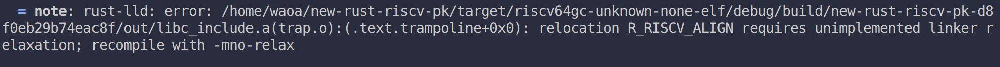

前言
最近在尝试Rust与C之间的混合编译, 在里面还夹杂着汇编文件来写特定的入口函数, 所以写这一篇记录Rust,C与汇编他们之间如何互相调用
源文件变成可执行(以C为例)
首先来看C语言的源文件是如何变成可执行文件的
- 预处理(hello.c -> hello.i) 将宏#define等替换
- 编译(hello.i -> hello.s) 将预处理后的文件编译成汇编代码
- 汇编(hello.s -> hello.o) 根据汇编生成目标文件(二进制)
- 链接(hello.o -> hello.exe/out) 将多个目标文件链接生成可执行代码
在这个过程中可以看见直接写汇编语言缺少了前面两项, 而C语言还是要生成汇编文件, 因此只要汇编和C语言都遵循一个规则它们就可以互相调用了
在不同的机器上参数传递标准似乎不太一样, 比如x86中似乎是直接将参数入栈以从右向左的方式来传递, 而在x86-64和RISCV等架构用一些专门的寄存器来传参数, 超过多少个参数才会使用栈来传递参数, 对于他们之间的具体差异可以见Linux X86架构参数传递规则, 本篇文章里面使用x86-64为例, 因为比较常用
C与汇编之间的调用
C调用汇编
C(hello.c):
|
汇编(test.s):
|
执行gcc hello.c test.s编译后即可看到输出了一个3
- 在C文件中我们直接用extern拿到了汇编语言的那个函数入口,然后调用并输出结果
- 在汇编文件中我们首先保存了
%rbp寄存器, 因为在定义中这个是被调用的函数需要保存的寄存器, 随后我们将%rbp设为了栈指针的值, 并把%edi和%esi放入了栈中, 随后将值取出放入到%edx以及%eax中, 最后相加将结果放入%eax, 恢复%rbp的值之后返回 - 这个add函数其实是我写了一个C语言函数之后生成汇编文件改写来的hh, 毕竟不是很熟悉x86的指令..
汇编调用C
由于C语言调用printf比较方便, 所以我们会采用 C-> 汇编 -> C -> 汇编 -> C的方式打印出我们的结果
C(hello.c):
|
汇编(test.s):
|
执行gcc hello.c test.s编译后即可看到输出了一个3
- C文件中拿到了test的入口地址,调用后打印返回值, C语言中提供了add函数来加两个值
- 汇编中直接将立即数传入了第一个参数和第二个参数的寄存器中, 然后调用add并返回(因为返回值寄存器没变)
Rust与汇编之间的调用
目前我知道的应该是有两种方法调用, 但第一种我试了一下在build的时候好像会报错, 还是先放出来待以后再看看
- 利用Rust中的global_asm!宏(注意需要nightly)
- 利用build.rs中的cc依赖编译出静态库后在链接时搞在一起
现在说明第二种的方法
main.rs:
|
test.s:
|
build.rs:
|
Cargo.toml
|
具体他们之间怎么调的其实和之前的C语言大同小异, 都是先定义好函数, 之后在链接时把函数入口写入实际的值就好了, 这里就不再赘述了.
在汇编调用Rust函数的时候记得要在函数前面加上#[no_mangle]让Rust编译器不要对这个函数名进行变动, 不然汇编找不到这个函数.
Rust与C之间的调用
终于到了我实际要使用的东西了,这里文件较多,首先放上目录:
|
接下来一个一个文件来看:
hello.c:
|
hello.h:
|
test.c:
|
test.h:
|
main.rs:
|
build.rs:
|
Cargo.toml:
|
执行cargo r输出应该是:

由于是rust主导生成的执行文件,因此main函数在rust中, 将Rust编译为库文件然后将C编译后的文件与Rust文件链接应该也可以将main函数用C语言写, main.rs中我们调用了C语言的5个函数,这5个函数的功能分别为:
- 测试Rust调用C语言的函数
- 测试Rust调用C语言的函数并传参
- 测试Rust调用C语言的函数,并且那个函数调用了C语言的函数
- 测试Rust调用C语言在另外一个文件的函数并传参,打印返回值
- 测试Rust调用C语言在另外一个文件的函数并传参,打印返回值, 调用的函数调用了Rust的函数
rust_div
Rust, C, 汇编联合
理清楚了这些, 最后来看看三者合并怎么调用, 其实方法很简单, Rust自带的cc功能蛮强大了, 可以编译c文件为库(可以加上汇编文件)然后自动合并Rust与C, 代码简单易懂. 或者需要在Rust当中添加汇编代码就用global_asm或者内联汇编
我写这篇文章的目的主要是为了 让汇编文件在Rust中使用到C语言的#define宏(要直接复制到Rust中感觉有点麻烦..而且汇编中也有#ifndef语句,Rust编译的话不认), 现在看来只能将汇编文件与c语言一起编译然后与Rust链接在一起了..因为编译生成库后已经经过预处理部分了
不过之前尝试将cc编译后的库中的某个函数放到可执行文件中的section失败了, 上网查说是删section简单,但添加section比较困难, 因此会报错, 可以看下面这张图:

貌似只能将函数重定向而不能添加代码..还不了解如何对rust-lld加-mno-relax, 这方面还得再学习, 下学期学编译原理希望能能解决这些问题吧, 目前感觉可以尝试将rust编译成库文件然后用makefile什么的工具自动将他与C语言编译后的合并?